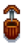

Oak Resin
| Oak Resin | |||||||||||
| A sticky, fragrant substance derived from oak sap. | |||||||||||
| Information | |||||||||||
| Source |
|
||||||||||
| Season | |||||||||||
| Energy | Inedible | ||||||||||
|
|||||||||||
| Crafting | |||||||||||
| Equipment |  Tapper Heavy Tapper |
||||||||||
| Processing Time | |||||||||||
| Ingredients | Oak Tree | ||||||||||
Oak Resin is a Tree sap made from the Tapper when it is placed on an Oak Tree, taking  7 days, or
7 days, or  3 days with a Heavy Tapper.
3 days with a Heavy Tapper.
Oak Resin can be obtained by tapping Oak Trees grown by the player or growing naturally in Stardew Valley (e.g., in Cindersap Forest). It is also a rare drop from Haunted Skulls, and can rarely be obtained after processing Hardwood in a Wood Chipper.
Although Oak Resin is labeled "Artisan Good" in-game, it does not benefit from the Artisan Profession, but instead from the Tapper Profession (+25% value).
Gifting
| Villager Reactions
| |
|---|---|
| Like | |
| Dislike | |
Bundles
- Oak Resin is used in the
 Enchanter's Bundle on the Bulletin Board.
Enchanter's Bundle on the Bulletin Board. - Oak Resin is one of the options for the Exotic Foraging Bundle in the Crafts Room.
Recipes
| Image | Name | Description | Ingredients | Recipe Source(s) | Sell Price |
|---|---|---|---|---|---|
| Deluxe Speed-Gro | Stimulates leaf production. Guaranteed to increase growth rate by at least 25%. Mix into tilled soil. | ||||
| Keg | Place a fruit or vegetable in here. Eventually it will turn into a beverage. | N/A |
Tailoring
Oak Resin can be used in the spool of the Sewing Machine to create the  Floppy Beanie. It can be used in dyeing, serving as a green dye at the dye pots, located in Emily's and Haley's house, 2 Willow Lane.
Floppy Beanie. It can be used in dyeing, serving as a green dye at the dye pots, located in Emily's and Haley's house, 2 Willow Lane.
Quests
One Oak Resin may be requested by Woodskip in a Fish Pond quest to increase the capacity of the pond from 5 to 7.
History
- 1.0: Introduced.
- 1.4: Can now be used in Tailoring. Can be requested in a Fish Pond quest.
- 1.5: Added Heavy Tapper.